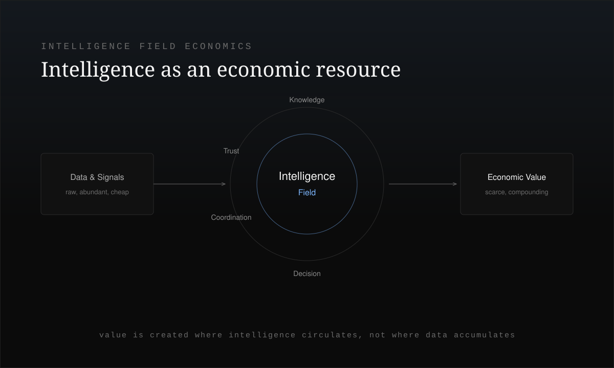
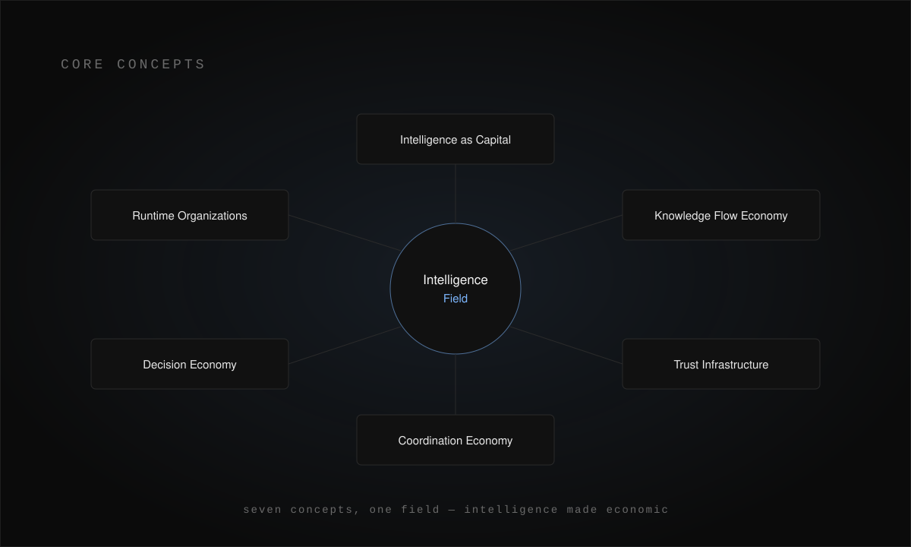
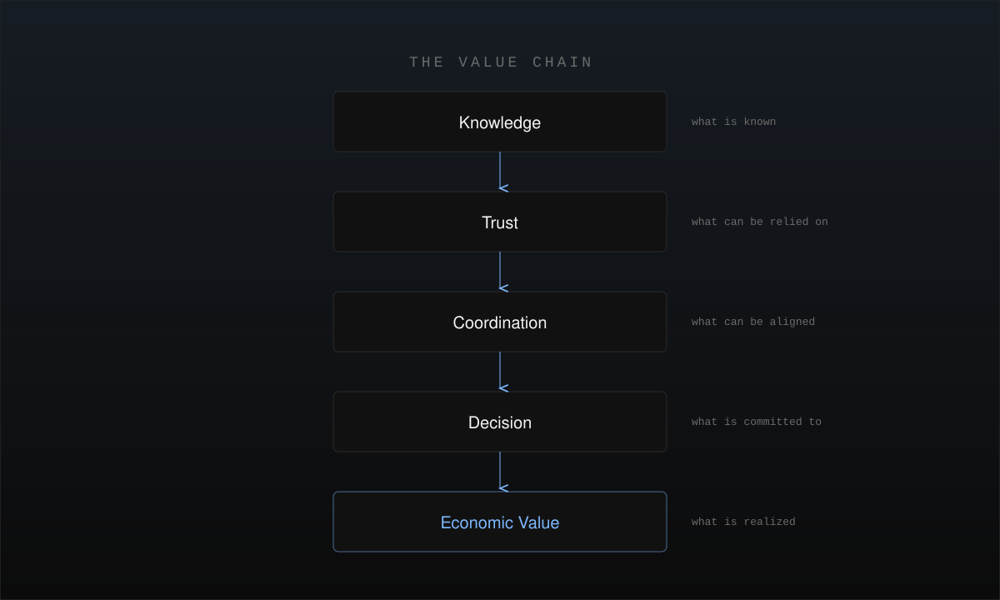
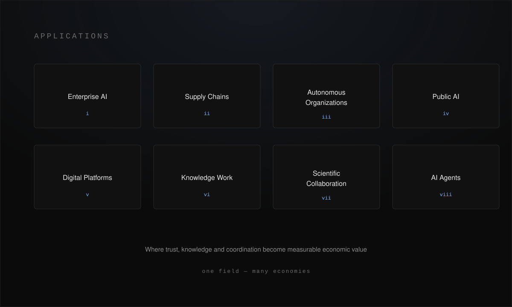
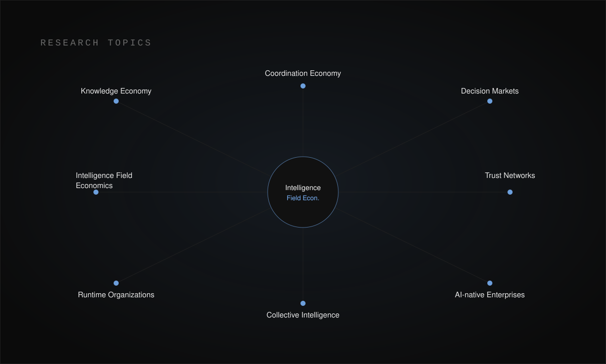

Trust, Knowledge and Coordination in the AI Era. Artificial intelligence is not only changing productivity. It is transforming the nature of value creation itself.
This research explores intelligence as an economic resource — where trust, knowledge, coordination, and decision-making become the primary drivers of future economies.
Enter AI Economics & Intelligence Field Economics through video and long-form texts — visual introductions and deeper explorations of trust, knowledge circulation, coordination, and intelligence as a productive resource.
Video introductions to intelligence field economics — how trust, knowledge, and coordination become the primary drivers of value. Not yet available.
Long-form explorations of intelligence as an economic resource — trust, knowledge circulation, and coordination as the infrastructure of AI-era economies.
Intelligence field economics studies how AI transforms economic systems — treating knowledge circulation, trust, coordination, and decision-making as the primary sources of value, rather than treating intelligence as a mere efficiency gain.

AI is usually framed as a productivity story — the same work, done faster and cheaper. That framing is incomplete. As intelligence becomes abundant, the scarce and valuable elements shift: what can be trusted, what knowledge can be circulated, and what coordination can be sustained.
Knowledge
↓ Trust
↓ Coordination
↓ Decision
↓ Economic Value
This research treats the following as first-class economic phenomena:
Intelligence does not sit inside a single model. It is relational — distributed across humans, agents, organizations, and institutions. An economy built on it behaves like a field, not a stockpile: value emerges from circulation and coordination, and compounds through trust.
AI is not only
changing productivity.
It is changing
what value is.
When intelligence becomes cheap and abundant, the classical picture of production breaks down. The bottleneck is no longer computation or output — it is trust, coordination, and the ability to turn signals into accountable decisions.
Abundant intelligence does not automatically become value. An AI can produce a correct answer while an organization still stalls — because the answer is not yet trusted, coordinated, or owned by an accountable decision-maker.
The old chain treated a model's output as the product. The new chain treats value as the end of a longer process — one that must pass through trust, coordination, and an accountable decision before it becomes economic value.
Data → Model → Output
Knowledge → Trust → Coordination → Decision → Value
Seven concepts define how intelligence becomes economic — from intelligence as capital to the intelligence field itself.
Intelligence — not only labor or capital goods — becomes the compounding factor of production, accumulating and reinvesting like capital.
Value arises from how knowledge circulates, transforms, and becomes actionable across people and agents — not from how much is stored.
Verified, traceable trust is the settlement layer that lets knowledge and decisions move safely between humans, agents, and institutions.
As the cost of coordinating humans and AI collapses, coordination itself becomes a designable, tradable, and value-bearing resource.
The scarce act is the accountable decision. Markets form around who decides, on what basis, and with what verifiable trace.
Firms become runtimes: rules, roles, and boundaries are adjusted continuously in operation rather than fixed at design time.
Intelligence is relational — an economic field emerging across humans, agents, and institutions, not a property held by any single model.

The concepts are not independent — they form a chain. Knowledge becomes reliable through trust, trust enables coordination, coordination resolves into decision, and decision realizes economic value.

No single stage produces value on its own. Knowledge without trust is noise; trust without coordination is inert; coordination without decision is talk. Value appears only when the whole chain resolves.
Knowledge
↓ Trust
↓ Coordination
↓ Decision
↓ Economic Value
Most economic loss in AI systems is not a modeling failure — it is a broken link in this chain. Knowledge that never circulates, trust that cannot be verified, or coordination that never becomes an accountable decision.
Value is the last
layer of a chain —
not the output
of a model.
The economic runtime that turns market and data signals into compounding value — an economy-specialized reading of the Decision Trace Model.
Where intelligence field economics becomes concrete — domains in which trust, knowledge, and coordination turn into measurable economic value.
Firms compete less on model access and more on how well they circulate knowledge and coordinate trusted decisions.
Verified trust and shared knowledge let distributed partners coordinate at lower cost and higher resilience.
Organizations that run on agents require a coordination and trust economy to allocate work and accountability.
Public institutions turn algorithmic decisions into accountable, traceable value under governance and boundary constraints.
Platforms become markets for knowledge and coordination, pricing trust and reputation as first-class assets.
The unit of value shifts from producing output to circulating, verifying, and deciding on knowledge.
Research accelerates when knowledge flow and trust networks let distributed teams coordinate and reuse results.
Agent economies need trust settlement and coordination protocols to transact, delegate, and remain accountable.

Open lines of inquiry within intelligence field economics — the questions this research is actively working through.
How the circulation and transformation of knowledge — not its accumulation — creates and captures value.
Pricing, designing, and trading coordination as the collapsing cost of aligning humans and AI reshapes markets.
Structures where accountable decisions — who decides, on what trace — become the scarce, priced good.
How verifiable trust propagates between agents, humans, and institutions as economic settlement infrastructure.
Organizational forms built around intelligence as capital, runtime governance, and continuous coordination.
How distributed agents and people compose intelligence that no individual node holds alone.
Economic behavior of firms whose rules and boundaries adapt continuously rather than at design time.
The unifying frame: intelligence as a relational field, and value as the product of its circulation.

Intelligence is becoming the primary resource of the economy. Value is created where knowledge circulates, where trust is verified, and where coordination becomes decision. The economy of intelligence is a field, not a stock.
{kind=link}
{kind=link}
{kind=link}
{kind=link}
{kind=link}